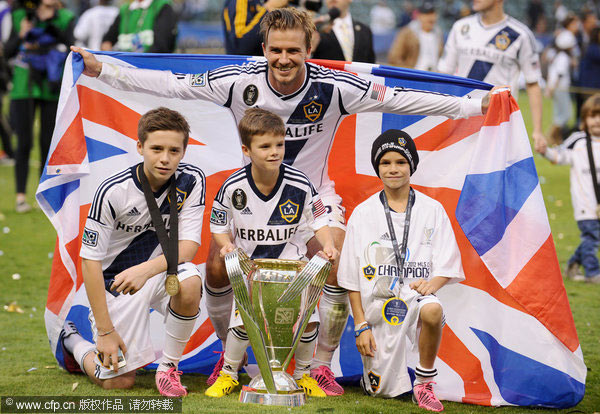
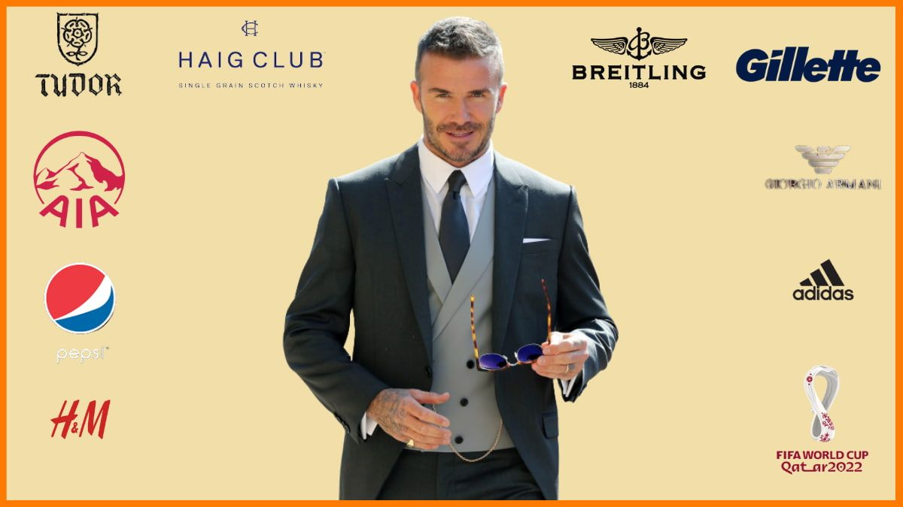

I am David Beckham, a retired English professional footballer, and cultural icon. With a career spanning over two decades, I've had the privilege of playing for renowned football clubs and representing the English national team. My dedication to the sport has earned me a place among the football legends.
Throughout my career, I played for clubs including Manchester United, Real Madrid, LA Galaxy, Paris Saint-Germain, and more. I won numerous domestic and international titles, becoming one of the most recognized and respected footballers globally.
As a professional athlete, I've honed my skills in teamwork, leadership, and perseverance. I bring a winning attitude, discipline, and a strong work ethic to any endeavor. My passion for excellence and my global recognition can be an asset to any organization.
As a global ambassador, my influence transcends borders. I leverage my fame to promote charitable and humanitarian efforts, making a positive impact on a global scale.
My journey as a soccer club owner is equally impressive. I have ventured into the world of sports entrepreneurship, taking ownership of Inter Miami CF in Major League Soccer (MLS). My dedication to growing the sport in the United States is evident in my commitment to the club and the broader development of football in North America.
In the realm of fashion, my collaborations with renowned brands and my own fashion ventures reflect my keen sense of style. As a fashion model, I continue to set trends and redefine the boundaries of men's fashion.
